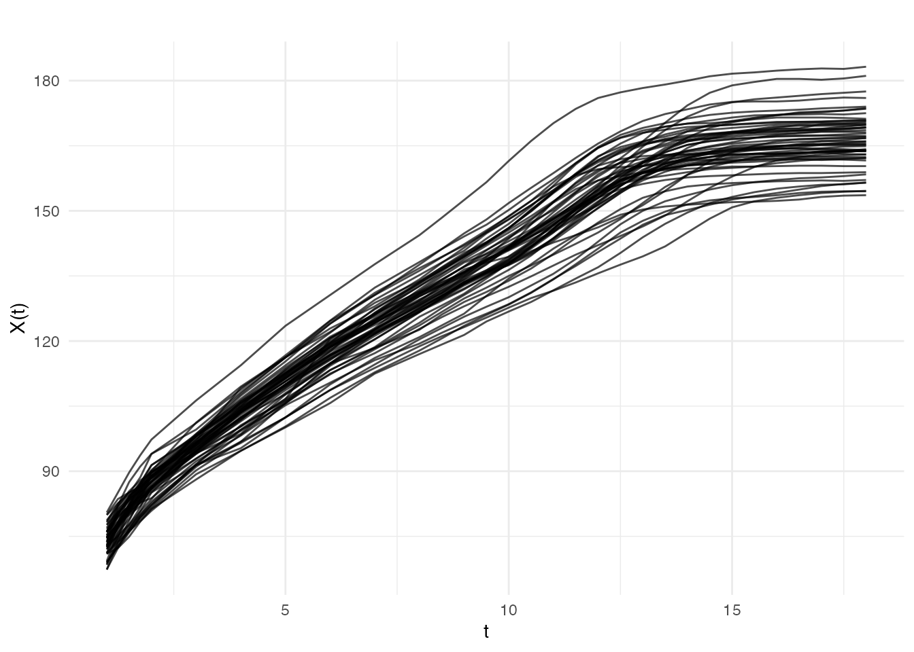
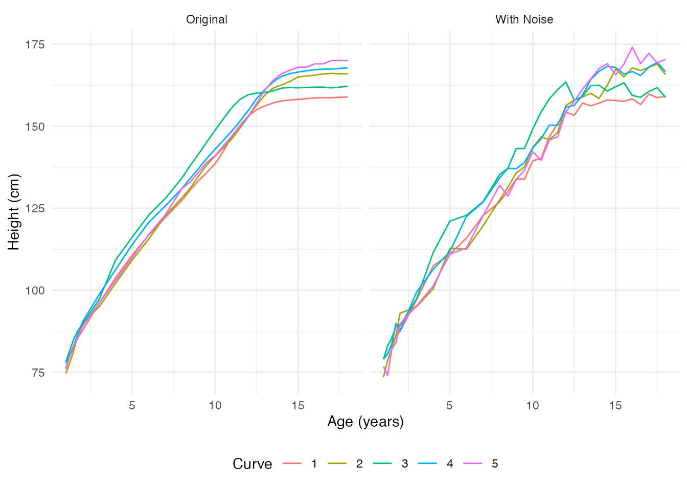
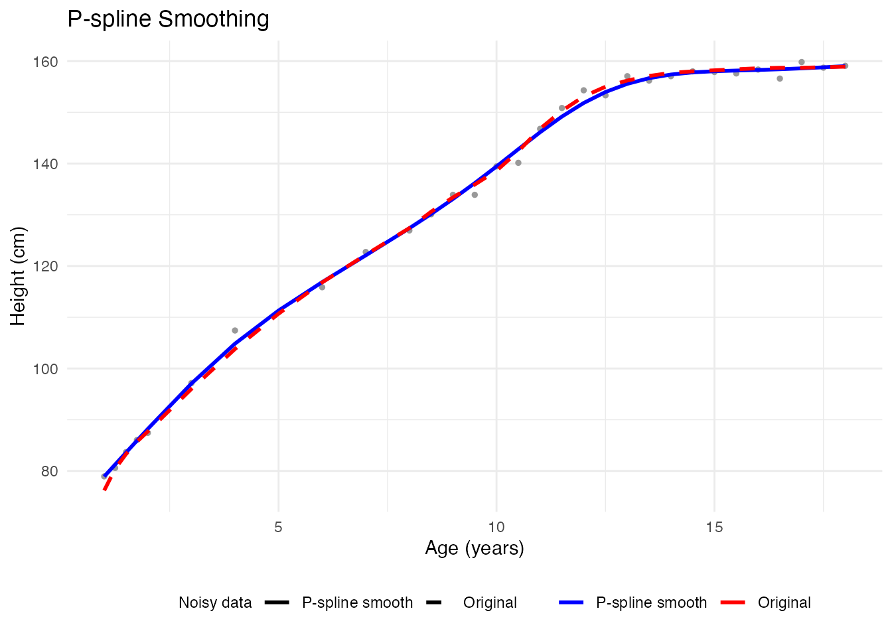
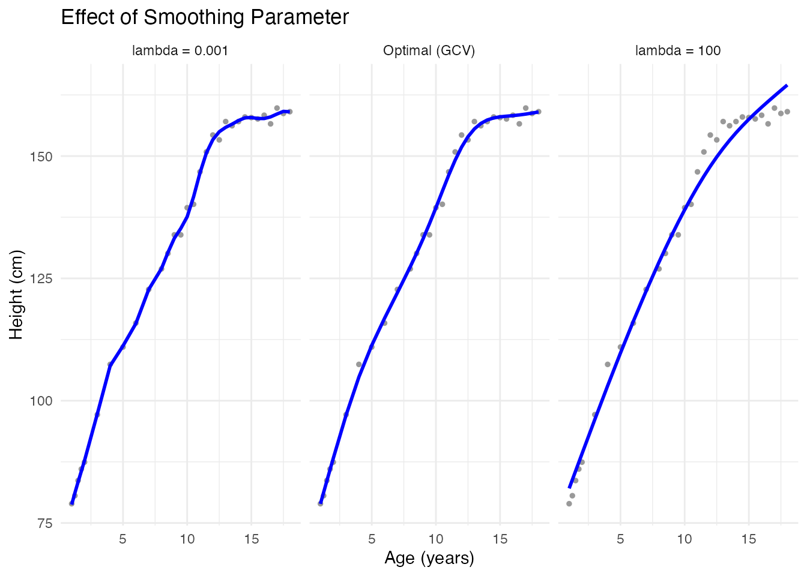
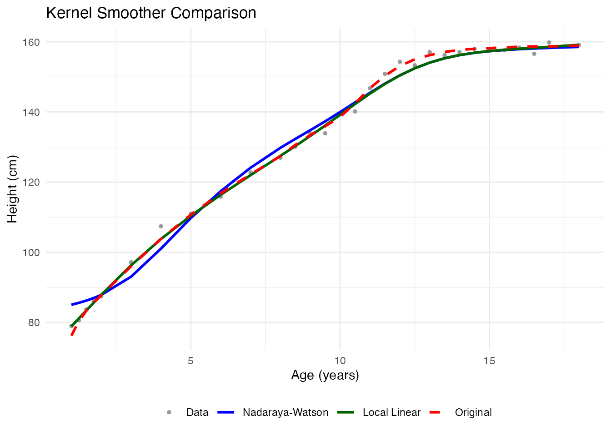
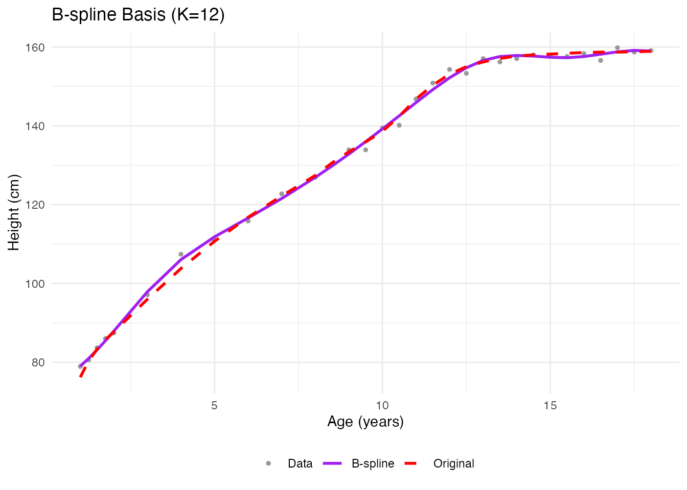
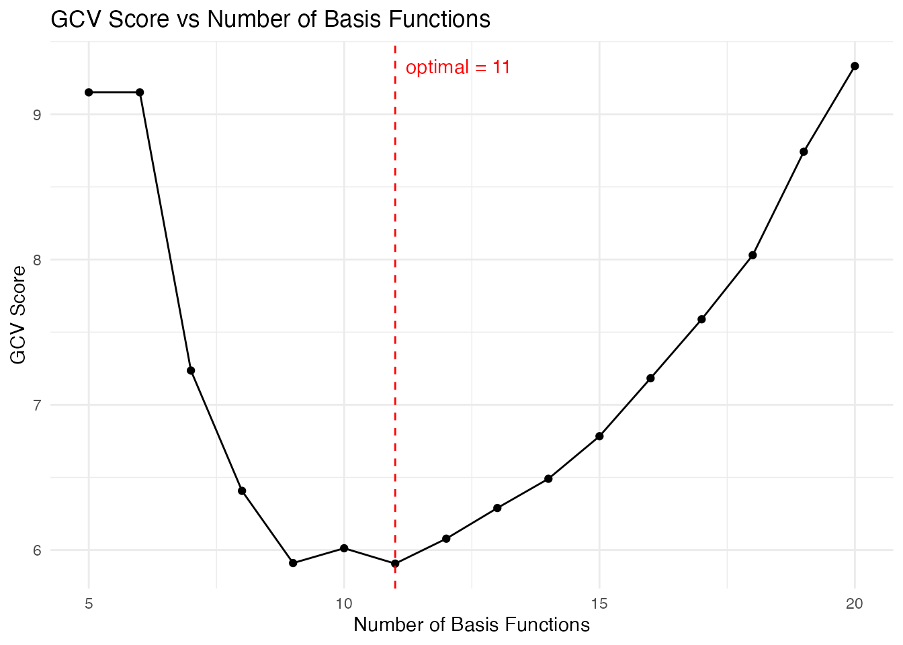
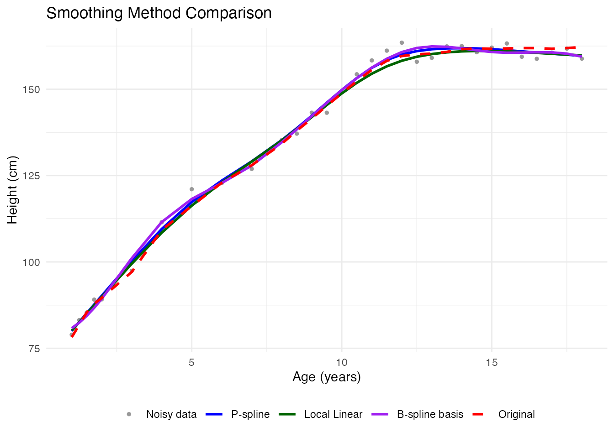
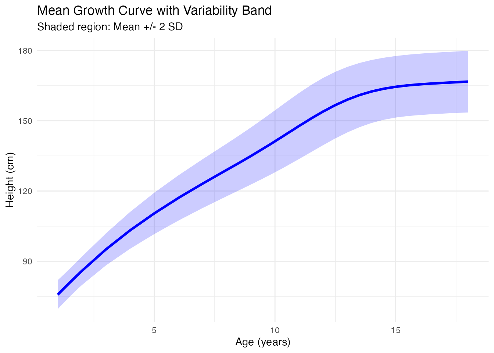

Introduction to Smoothing Functional Data
Source:vignettes/intro-to-smoothing.Rmd
intro-to-smoothing.RmdWhy Smooth Functional Data?
Real-world functional data almost always contains measurement noise. Raw observations are discrete samples of an underlying smooth process, contaminated by:
- Measurement error: Instrument precision limits
- Sampling noise: Random variation at each time point
- Digitization artifacts: Finite resolution of recording devices
Smoothing transforms noisy discrete observations into smooth functional objects, revealing the true underlying signal. This is essential for:
- Computing derivatives (noise amplifies dramatically)
- Meaningful curve comparisons
- Interpretable visualizations
- Reliable statistical inference
Loading Real Data: The Berkeley Growth Study
The Berkeley Growth Study tracked the heights of 54 girls and 39 boys
from ages 1 to 18. This classic dataset is available in the
fda package.
# Check if fda package is available
if (!requireNamespace("fda", quietly = TRUE)) {
message("Install 'fda' package for real data examples: install.packages('fda')")
# Create synthetic growth-like data as fallback
age <- seq(1, 18, length.out = 31)
n_girls <- 20
heights <- matrix(0, n_girls, length(age))
for (i in 1:n_girls) {
# Gompertz growth curve with individual variation
A <- rnorm(1, 170, 5) # asymptotic height
b <- rnorm(1, 2.5, 0.2)
c <- rnorm(1, 0.15, 0.02)
heights[i, ] <- A * exp(-b * exp(-c * age)) + rnorm(length(age), sd = 1.5)
}
} else {
data(growth, package = "fda")
age <- growth$age
heights <- t(growth$hgtf) # Girls' heights (rows = curves, cols = time)
n_girls <- nrow(heights)
}
# Create fdata object
fd_raw <- fdata(heights, argvals = age)
cat("Dataset:", n_girls, "growth curves measured at", length(age), "ages\n")
#> Dataset: 54 growth curves measured at 31 agesVisualizing the Raw Data
plot(fd_raw, main = "Berkeley Growth Study: Girls' Heights",
xlab = "Age (years)", ylab = "Height (cm)")
The data appears relatively smooth because height was carefully measured. Let’s add some realistic measurement noise to demonstrate smoothing techniques:
# Add measurement noise to simulate less precise instruments
noise_sd <- 2.0 # cm of measurement error
heights_noisy <- heights + matrix(rnorm(length(heights), sd = noise_sd),
nrow = nrow(heights))
fd_noisy <- fdata(heights_noisy, argvals = age)
# Compare original and noisy using faceted ggplot
df_compare <- rbind(
data.frame(
age = rep(age, 5),
height = as.vector(t(fd_raw$data[1:5, ])),
curve = rep(1:5, each = length(age)),
type = "Original"
),
data.frame(
age = rep(age, 5),
height = as.vector(t(fd_noisy$data[1:5, ])),
curve = rep(1:5, each = length(age)),
type = "With Noise"
)
)
df_compare$curve <- factor(df_compare$curve)
ggplot(df_compare, aes(x = age, y = height, color = curve)) +
geom_line() +
facet_wrap(~ type) +
labs(x = "Age (years)", y = "Height (cm)", color = "Curve") +
theme_minimal() +
theme(legend.position = "bottom")
Method 1: P-spline Smoothing
Penalized splines (P-splines) are a powerful and flexible smoothing method. They balance two objectives:
- Fit the data closely (minimize residuals)
- Keep the curve smooth (penalize roughness)
The smoothing parameter controls this trade-off: - Small : Follows data closely, may be wiggly - Large : Very smooth, may miss real features
Automatic Smoothing with P-splines
# pspline() automatically selects optimal lambda via GCV
fd_pspline <- pspline(fd_noisy)
print(fd_pspline)
#> P-spline Smoothing Results
#> ==========================
#> Number of curves: 54
#> Number of basis functions: 20
#> Penalty order: 2
#> Lambda: 1e+00
#> Effective df: 6.81
#> GCV: 5.701e+00Visualizing the Result
# Compare noisy vs smoothed for first curve
idx <- 1
df_pspline <- data.frame(
age = rep(age, 3),
height = c(fd_noisy$data[idx, ], fd_pspline$fdata$data[idx, ], fd_raw$data[idx, ]),
type = factor(rep(c("Noisy data", "P-spline smooth", "Original"), each = length(age)),
levels = c("Noisy data", "P-spline smooth", "Original"))
)
ggplot(df_pspline, aes(x = age, y = height, color = type, linetype = type)) +
geom_point(data = subset(df_pspline, type == "Noisy data"),
color = "gray60", size = 1) +
geom_line(data = subset(df_pspline, type != "Noisy data"), linewidth = 1) +
scale_color_manual(values = c("Noisy data" = "gray60", "P-spline smooth" = "blue",
"Original" = "red")) +
scale_linetype_manual(values = c("Noisy data" = "blank", "P-spline smooth" = "solid",
"Original" = "dashed")) +
labs(x = "Age (years)", y = "Height (cm)", title = "P-spline Smoothing",
color = NULL, linetype = NULL) +
theme_minimal() +
theme(legend.position = "bottom")
Effect of Smoothing Parameter
# Different smoothing levels
fd_less <- pspline(fd_noisy, lambda = 0.001) # Less smoothing
fd_more <- pspline(fd_noisy, lambda = 100) # More smoothing
idx <- 1
df_lambda <- rbind(
data.frame(age = age, height = fd_noisy$data[idx, ], type = "data",
lambda = "lambda = 0.001"),
data.frame(age = age, height = fd_less$fdata$data[idx, ], type = "smooth",
lambda = "lambda = 0.001"),
data.frame(age = age, height = fd_noisy$data[idx, ], type = "data",
lambda = "Optimal (GCV)"),
data.frame(age = age, height = fd_pspline$fdata$data[idx, ], type = "smooth",
lambda = "Optimal (GCV)"),
data.frame(age = age, height = fd_noisy$data[idx, ], type = "data",
lambda = "lambda = 100"),
data.frame(age = age, height = fd_more$fdata$data[idx, ], type = "smooth",
lambda = "lambda = 100")
)
df_lambda$lambda <- factor(df_lambda$lambda,
levels = c("lambda = 0.001", "Optimal (GCV)", "lambda = 100"))
ggplot(df_lambda, aes(x = age, y = height)) +
geom_point(data = subset(df_lambda, type == "data"), color = "gray60", size = 1) +
geom_line(data = subset(df_lambda, type == "smooth"), color = "blue", linewidth = 1) +
facet_wrap(~ lambda) +
labs(x = "Age (years)", y = "Height (cm)",
title = "Effect of Smoothing Parameter") +
theme_minimal()
Method 2: Kernel Smoothers
Kernel smoothers estimate the value at each point using a weighted average of nearby observations. The bandwidth controls the neighborhood size.
Nadaraya-Watson Smoother
# Compute smoother matrix with Nadaraya-Watson
# S.NW takes evaluation points (tt) as first argument
h <- h.default(fd_noisy) # Default bandwidth based on data
S_nw <- S.NW(tt = age, h = h)
# Apply smoother to each curve
fd_kernel <- fd_noisy
for (i in 1:nrow(fd_kernel$data)) {
fd_kernel$data[i, ] <- as.vector(S_nw %*% fd_noisy$data[i, ])
}Comparing Kernel Methods
idx <- 1
df_kernels <- data.frame(
age = rep(age, 4),
height = c(fd_noisy$data[idx, ], fd_kernel$data[idx, ],
fd_llr$data[idx, ], fd_raw$data[idx, ]),
type = factor(rep(c("Data", "Nadaraya-Watson", "Local Linear", "Original"),
each = length(age)),
levels = c("Data", "Nadaraya-Watson", "Local Linear", "Original"))
)
ggplot(df_kernels, aes(x = age, y = height, color = type, linetype = type)) +
geom_point(data = subset(df_kernels, type == "Data"), size = 1) +
geom_line(data = subset(df_kernels, type != "Data"), linewidth = 1) +
scale_color_manual(values = c("Data" = "gray60", "Nadaraya-Watson" = "blue",
"Local Linear" = "darkgreen", "Original" = "red")) +
scale_linetype_manual(values = c("Data" = "blank", "Nadaraya-Watson" = "solid",
"Local Linear" = "solid", "Original" = "dashed")) +
labs(x = "Age (years)", y = "Height (cm)",
title = "Kernel Smoother Comparison", color = NULL, linetype = NULL) +
theme_minimal() +
theme(legend.position = "bottom")
Bandwidth Selection
The default bandwidth from h.default() is based on the
data:
Method 3: Basis Expansion
Represent curves as linear combinations of basis functions. This provides dimensionality reduction along with smoothing.
B-spline Basis
# Project to B-spline basis
coefs <- fdata2basis(fd_noisy, nbasis = 12, type = "bspline")
fd_basis <- basis2fdata(coefs, argvals = age, type = "bspline")
# Compare
idx <- 1
df_bspline <- data.frame(
age = rep(age, 3),
height = c(fd_noisy$data[idx, ], fd_basis$data[idx, ], fd_raw$data[idx, ]),
type = factor(rep(c("Data", "B-spline", "Original"), each = length(age)),
levels = c("Data", "B-spline", "Original"))
)
ggplot(df_bspline, aes(x = age, y = height, color = type, linetype = type)) +
geom_point(data = subset(df_bspline, type == "Data"), size = 1) +
geom_line(data = subset(df_bspline, type != "Data"), linewidth = 1) +
scale_color_manual(values = c("Data" = "gray60", "B-spline" = "purple",
"Original" = "red")) +
scale_linetype_manual(values = c("Data" = "blank", "B-spline" = "solid",
"Original" = "dashed")) +
labs(x = "Age (years)", y = "Height (cm)", title = "B-spline Basis (K=12)",
color = NULL, linetype = NULL) +
theme_minimal() +
theme(legend.position = "bottom")
Automatic Basis Selection
How many basis functions? Cross-validation finds the optimal number:
# Cross-validation for optimal number of basis functions
cv_basis <- fdata2basis_cv(fd_noisy, type = "bspline",
nbasis.range = 5:20)
print(cv_basis)
#> Basis Cross-Validation Results
#> ==============================
#> Criterion: GCV
#> Optimal nbasis: 11
#> Score at optimal: 5.906161
#> Range tested: 5 - 20
plot(cv_basis)
Information Criteria
The fdata2basis_cv function supports different criteria:
- GCV (default): Generalized Cross-Validation -
CV: Leave-one-out Cross-Validation -
AIC: Akaike Information Criterion -
BIC: Bayesian Information Criterion
# Get optimal basis from our CV result
optimal_nbasis <- cv_basis$optimal.nbasis
cat("Optimal number of basis functions (GCV):", optimal_nbasis, "\n")
#> Optimal number of basis functions (GCV): 11Comparing All Methods
idx <- 3 # Pick a different curve
# Get smoothed versions
smooth_pspline <- fd_pspline$fdata$data[idx, ]
smooth_kernel <- fd_llr$data[idx, ]
# Use optimal basis from CV
coefs_opt <- fdata2basis(fd_noisy, nbasis = optimal_nbasis, type = "bspline")
smooth_basis <- basis2fdata(coefs_opt, argvals = age, type = "bspline")$data[idx, ]
# Create data frame for plotting
df_all <- data.frame(
age = rep(age, 5),
height = c(fd_noisy$data[idx, ], smooth_pspline, smooth_kernel,
smooth_basis, fd_raw$data[idx, ]),
method = factor(rep(c("Noisy data", "P-spline", "Local Linear",
"B-spline basis", "Original"), each = length(age)),
levels = c("Noisy data", "P-spline", "Local Linear",
"B-spline basis", "Original"))
)
ggplot(df_all, aes(x = age, y = height, color = method, linetype = method)) +
geom_point(data = subset(df_all, method == "Noisy data"), size = 1) +
geom_line(data = subset(df_all, method != "Noisy data"), linewidth = 1) +
scale_color_manual(values = c("Noisy data" = "gray60", "P-spline" = "blue",
"Local Linear" = "darkgreen", "B-spline basis" = "purple",
"Original" = "red")) +
scale_linetype_manual(values = c("Noisy data" = "blank", "P-spline" = "solid",
"Local Linear" = "solid", "B-spline basis" = "solid",
"Original" = "dashed")) +
labs(x = "Age (years)", y = "Height (cm)",
title = "Smoothing Method Comparison", color = NULL, linetype = NULL) +
theme_minimal() +
theme(legend.position = "bottom")
Mean and Variability
After smoothing, compute summary statistics:
# Use P-spline smoothed data
fd_smooth <- fd_pspline$fdata
# Mean curve
mean_curve <- mean(fd_smooth)
# Standard deviation at each point
sd_curve <- sd(fd_smooth)
# Create data frame for plotting
df_mean <- data.frame(
age = age,
mean = mean_curve$data[1, ],
lower = mean_curve$data[1, ] - 2 * sd_curve$data[1, ],
upper = mean_curve$data[1, ] + 2 * sd_curve$data[1, ]
)
ggplot(df_mean, aes(x = age)) +
geom_ribbon(aes(ymin = lower, ymax = upper), fill = "blue", alpha = 0.2) +
geom_line(aes(y = mean), color = "blue", linewidth = 1.2) +
labs(x = "Age (years)", y = "Height (cm)",
title = "Mean Growth Curve with Variability Band",
subtitle = "Shaded region: Mean +/- 2 SD") +
theme_minimal()
Summary: When to Use Each Method
| Method | Best For | Key Parameter |
|---|---|---|
| P-splines | General purpose, automatic tuning | (smoothing) |
| Kernel smoothers | Non-parametric, local adaptation | (bandwidth) |
| Basis expansion | Dimensionality reduction, derivatives | (number of basis) |
Recommendations:
- Start with P-splines - automatic selection works well in most cases
- Use basis expansion when you need derivatives (smoother derivatives)
- Use kernel smoothers for highly irregular sampling or adaptive smoothing
References
- Ramsay, J.O. and Silverman, B.W. (2005). Functional Data Analysis. Springer.
- Eilers, P.H.C. and Marx, B.D. (1996). Flexible Smoothing with B-splines and Penalties. Statistical Science, 11(2), 89-121.
- Fan, J. and Gijbels, I. (1996). Local Polynomial Modelling and Its Applications. Chapman and Hall.